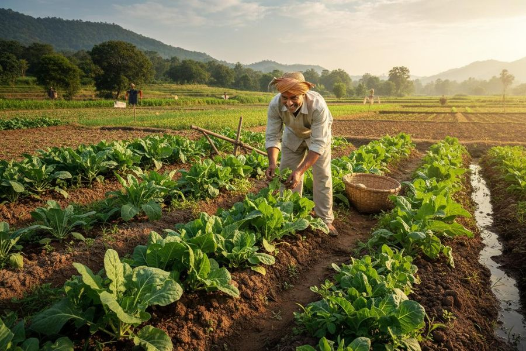
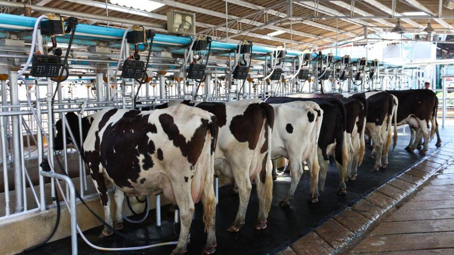
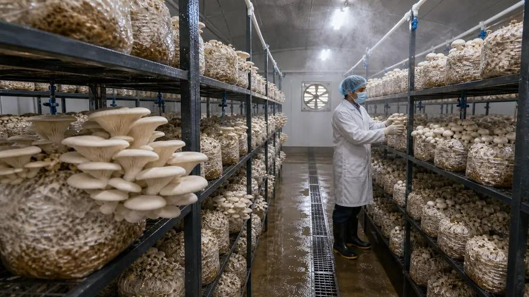
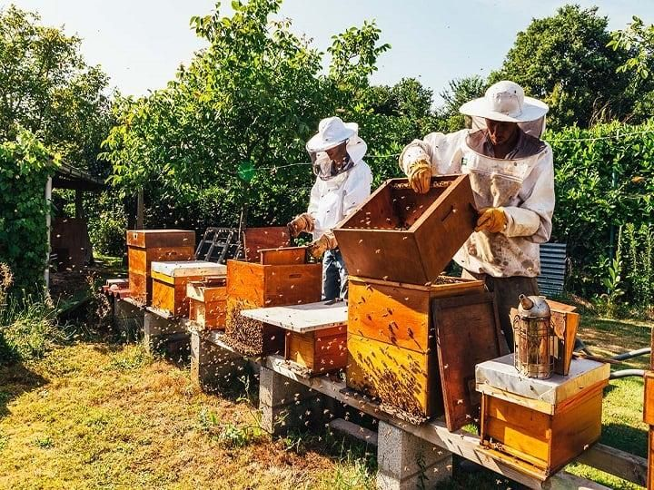
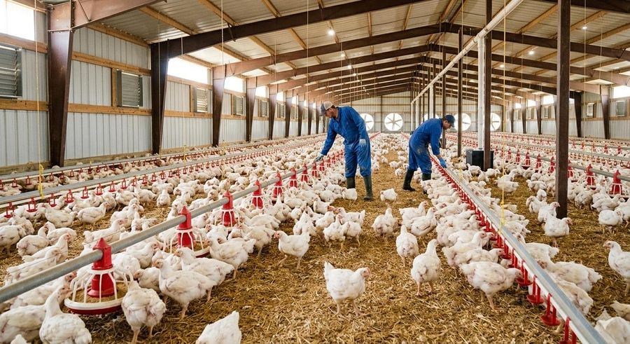
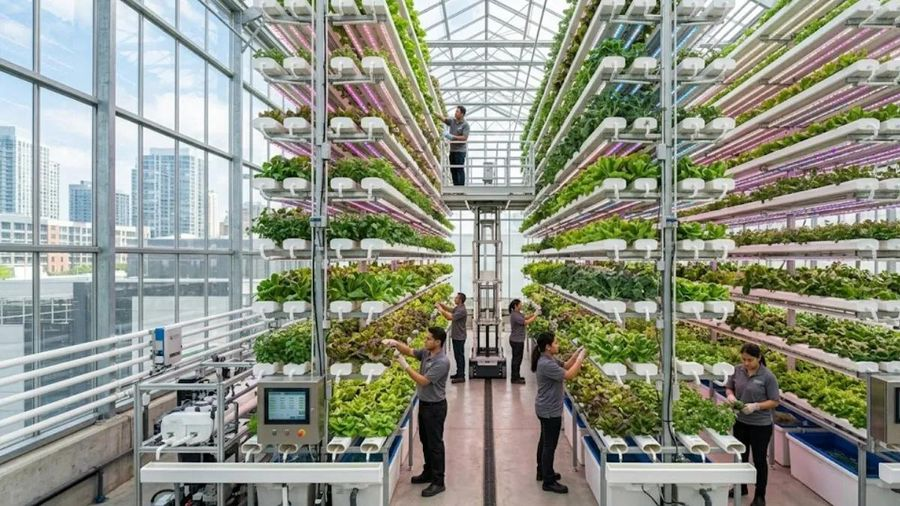
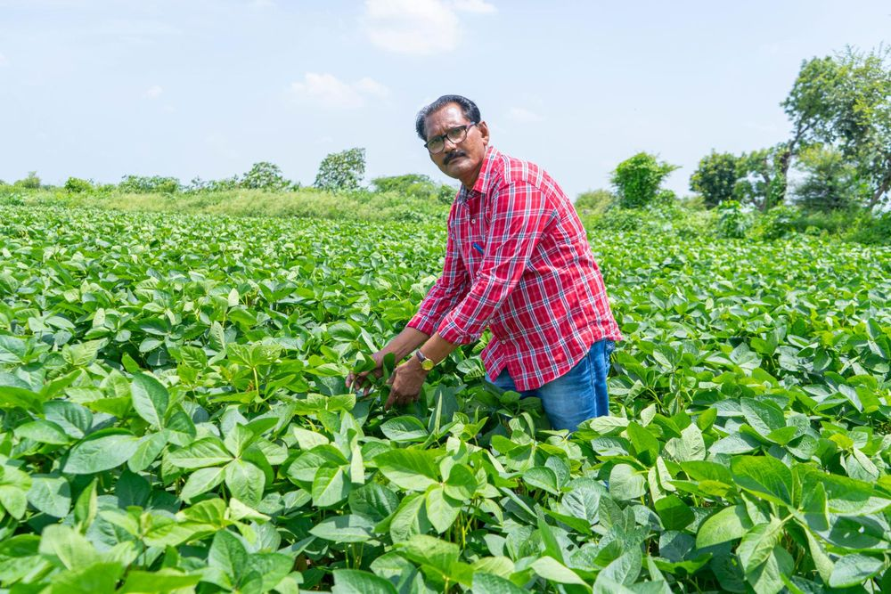
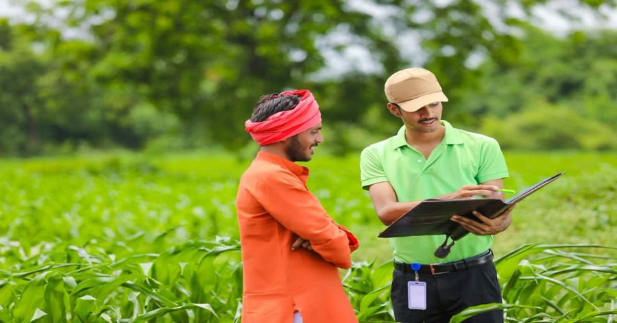

AGRI BUSINESS IDEAS
Discover Profitable Opportunities in Agriculture
Explore innovative farming businesses, modern agricultural techniques and income-generating opportunities for farmers.
Explore Business IdeasOpportunities
Explore Agriculture Business Ideas
Pick the idea that matches your land, skills and budget.



Mushroom Farming
Explore mushroom cultivation as a business opportunity.

Beekeeping
Explore honey production and related products.

Poultry Farming
Learn about poultry management and production.

Hydroponic Farming
Discover modern soil-less farming techniques.

Benefits
Why Choose Agriculture Business?
Additional Income Opportunities
Add a second source of income alongside regular farming.
Rural Employment
Create jobs for local youth and families in the village.
Sustainable Agriculture
Build businesses that care for soil, water and the environment.
Entrepreneurial Growth
Start small, learn and grow into a larger agri enterprise.
Getting Started
How to Start Your Agri Business?
Choose Your Business
Select an agricultural business according to your resources and interests.
Research the Market
Understand local demand, investment and potential customers.
Plan Your Investment
Prepare a practical budget and business plan.
Start and Grow
Begin with proper planning and gradually expand your business.
Farmer Support
Government Schemes & Support
Explore agriculture-related government schemes, subsidies, loans and business support that can help you start or grow your agri business.
- Government schemes
- Subsidies
- Agriculture loans
- Business support

Turn Your Farming Ideas Into Opportunities
Explore new agricultural business ideas and take the first step towards building your farming business.
Explore Opportunities